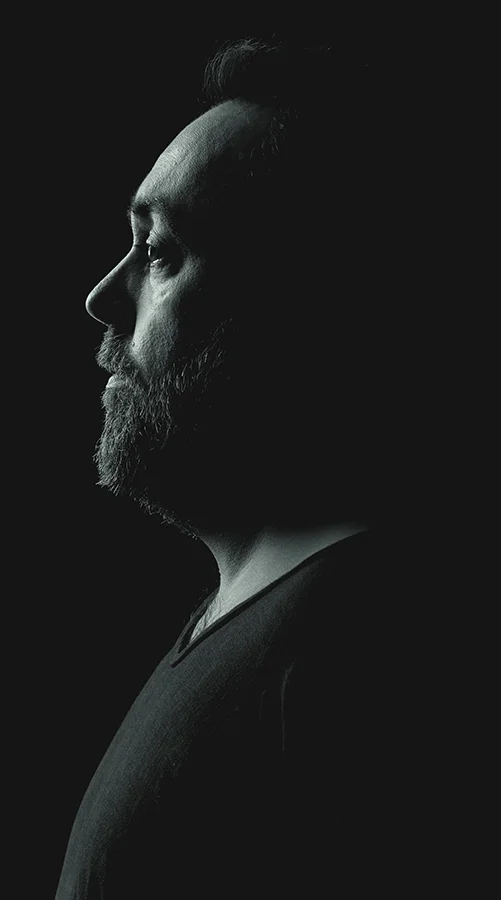

Hay una forma de trabajar que sí funciona para tu cabeza. Neurohacks OS es el sistema que la hace posible — una plantilla Notion con IA integrada, construida desde dentro por alguien que también la buscó durante años.
100% gratis · Notion es gratis · Sin tarjeta · Para siempre
Lo que pasa cuando usas herramientas neurotípicas
↺ Se repite. Semana tras semana.
No somos nosotros el problema.
Somos personas usando herramientas que no están diseñadas para nosotros.
Necesitamos un sistema que funcione como nuestro cerebro.
"Desde 2010 he liderado equipos de marketing en más de 24 países. Hacía cosas que para otros parecían imposibles — y sin embargo los sistemas que todos usaban nunca terminaban de funcionar para mí. Hasta que descubrí que tengo TDAH. Y por primera vez, todo tuvo sentido."
No era un problema mío. Era una incompatibilidad de sistema.
El TDAH es como ser zurdo en un mundo diseñado para diestros. No hay nada que arreglar. Solo necesitas las herramientas que entienden cómo piensas.
Construí Neurohacks OS porque no existía. La llevo refinando desde 2010 — y la actualizo cada vez que algo puede funcionar mejor.

Tu cerebro no tiene bugs. Los tienen los sistemas que te han dado. Reconoce el tuyo — y descubre exactamente cómo Neurohacks OS lo resuelve.
La parálisis de inicio en el TDAH no es pereza — es una disfunción del sistema de activación. El cerebro TDAH necesita alta urgencia, interés o presión para arrancar, ingredientes que la mayoría de tareas cotidianas no tienen.
El TDAH altera la regulación del sistema de recompensa — la dopamina escasea cuando una actividad deja de ser nueva. Los sistemas de productividad convencionales ignoran por completo esta realidad.
El cerebro TDAH tiene los bucles abiertos en modo constante. Cada tarea sin cerrar, cada compromiso no registrado y cada idea sin capturar ocupa memoria de trabajo activa. Es como tener 40 pestañas abiertas todo el tiempo.
El cerebro TDAH no percibe el tiempo de forma lineal — vive en "ahora" o "no ahora". Sin marcadores externos, las horas colapsan. Los plazos se sienten lejanos hasta que de repente son urgentes.
El hiperfocus es la otra cara del TDAH — la capacidad de absorción total en actividades de alto interés. Sin dirección, se convierte en un problema: el tiempo desaparece, las obligaciones se acumulan y el ciclo de culpa se reinicia.
La procrastinación en el TDAH no es pereza ni falta de voluntad — es una respuesta al estrés anticipatorio y a la dificultad de gestionar el inicio. El cerebro evita la tarea porque predice frustración, no porque no le importe.
Pensado para los días en que todo se siente cuesta arriba. Especialmente esos días.
5 preguntas. Tu nivel de energía de hoy. La IA construye tu plan desde ahí — no desde lo que deberías poder hacer.
Saca todo lo que tienes en la cabeza. Sin orden, sin estructura. La IA lo convierte en un plan que sabes que puedes cumplir hoy.
Bloques cortos con recompensas integradas. Si te dispersas — y vas a dispersarte — el sistema te recoge sin drama y sin sermones.
No qué hiciste mal — sino dónde ganaste. Ajustes pequeños, impacto real. El sistema aprende contigo semana a semana.
"Llevo 5 años probando apps de productividad. Ninguna entendía que mi cerebro no funciona en línea recta. Neurohacks OS es la primera que lo hace."
"El Brain Dump cambió mi vida. Antes pasaba 40 minutos decidiendo qué hacer. Ahora en 2 minutos tengo un plan que sé que voy a poder seguir."
"Mi psicólogo me la recomendó. Tres semanas después le dije que era lo mejor que había probado junto con la medicación."
Una plantilla Notion con IA que se adapta a cómo funciona tu cabeza. Y una comunidad de personas como tú — porque todo es más fácil cuando no lo haces solo.
Sin tarjeta · Gratis para siempre · Notion también es gratis · Descarga instantánea
Este sistema está diseñado para personas que ya probaron otros sistemas pero nunca lograron mantenerlos. Te ayuda a gestionar tus tareas, proyectos, objetivos y hábitos. Además, al final de cada semana te da feedback automático mostrándote en qué invertiste tu tiempo y qué puedes hacer mejor.
Tu centro de mando diario con solo lo esencial:
Todo está diseñado para ser simple y ligero. Incluso si nunca usaste Notion, te adaptas en 10–15 minutos. Incluye acceso a nuestros Gems y GPTs personalizados para TDAH: asistentes entrenados para desbloquearte cuando no sabes por dónde empezar.
La mayoría de los sistemas están cargados de detalles innecesarios que se ven bien pero terminan en procrastinación productiva. Neurohacks OS elimina todo lo que no es necesario: solo está lo que tu cerebro necesita para arrancar y mantenerse en movimiento.
Además, al final de cada semana recibes feedback automático que muestra adónde fue tu tiempo y cómo puedes mejorar la siguiente semana.
Absolutamente. El sistema es flexible y está diseñado para crecer contigo.
¡Para nada! Solo descarga Notion — es gratis — y empieza con la versión simple. Probablemente ni siquiera necesitarás el tutorial en vídeo, pero por si te pierdes, recibirás una guía paso a paso.
Sí. Sin tarjeta, sin prueba de 14 días, sin "gratis hasta que no lo sea". Neurohacks OS es gratis porque lo construí para mí y quiero que llegue a quien lo necesita. Si en algún momento hay una versión de pago con funciones extra, la versión core seguirá siendo siempre gratuita.
Sí. Escríbenos a soporte@neurohacks.ai — respondemos en pocos días laborables.
Recibes Neurohacks OS como plantilla Notion lista para usar, acceso a los Gems y GPTs personalizados para TDAH, y una guía paso a paso para empezar en menos de 10 minutos. También te enviamos la invitación al Discord privado de la comunidad.
Sí. Estamos preparando una versión premium con funciones avanzadas: gestión de proyectos, sprints, feedback semanal automático, IA de nivel avanzado y acceso a un Discord premium con talleres y sesiones en directo.
La versión gratuita seguirá siendo gratis para siempre. Si quieres ser el primero en saber cuándo está lista, déjanos tu email al descargar la plantilla.
Al instalar la plantilla te invitamos a un Discord exclusivo para personas neurodivergentes — un espacio sin ruido, sin juicios, donde gente como tú comparte, se apoya y avanza. No es otro grupo de productividad genérico. Es gente que entiende lo que es funcionar diferente porque lo vive.
Solo 5 minutos al día — un check-in matutino rápido para elegir tu destacado diario y tu micro-compromiso. Neurohacks OS está diseñado para mejorar tu vida, no para consumirla.
Exactamente por eso lo construí. Como persona con TDAH, cuando abandono un método rara vez vuelvo y todo el sistema se convierte en un caos. Pero con esta configuración no hay fricción. Cuando dejo de registrar una temporada y vuelvo, siempre puedo reempezar con la versión simple en lugar de castigarme. Neurohacks OS está construido para personas que lo dejan a los 3 días.
Dejarás de terminar cada semana con la sensación de que no hiciste nada. Empezarás a ver con claridad adónde va tu energía. Tendrás un sistema que no te juzga cuando lo abandonas — y al que siempre puedes volver. Para muchos usuarios es la primera vez que sienten que la productividad trabaja para ellos, no en su contra.
Instala Neurohacks OS hoy. Gratis, sin tarjeta, para siempre.
Empieza ahora — es gratisSé de los primeros. La comunidad está empezando.